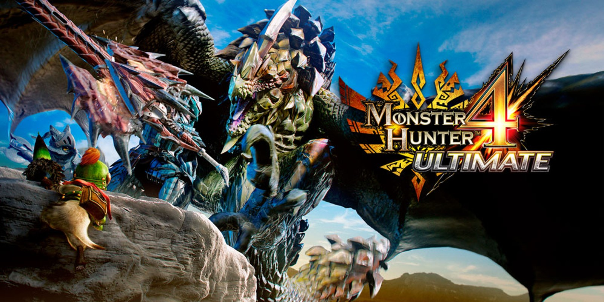

Favorite Video Games!
A list of various video games that I've played throughout the ages along with a general description of the game
Favorite Games as a Kid
The following games are ones that I really enjoyed playing when I was younger (though I still like playing them now)
Castle Crashers

Castle Crashers is a 1-4 player game in which you play (initially) as a knight chasing after the big bad guy to get your king's princesses back. The game gets its name from the fact that you are literally crashing into other castles to steal the princesses back.
Monster Hunter 4 Ultimate
Monster Hunter 4 Ultimate is a 1-4 player game in which you, well, hunt monsters. The title says it all, but doesn't do it much justice. There's a great variety of monsters to take down, from small to the size of a scyscraper.